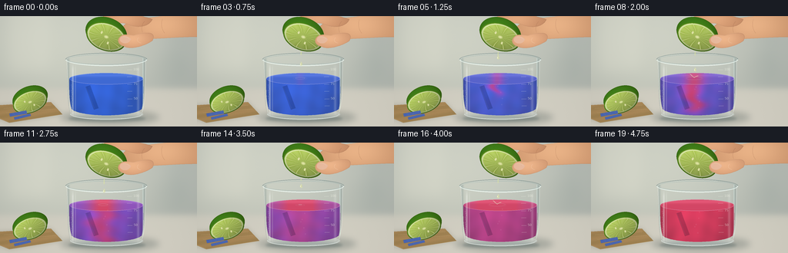
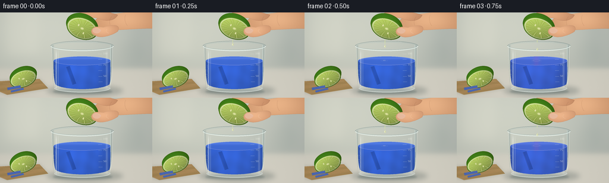

CODING AGENTS AS PIXEL WORLD MODELS
traex/GPT-6.1-Sol · material_0035
点击播放 · 原生 RGB 像素
逐轮保存的候选
回放视频、检查图与代码变化。
每份候选均可单独播放。实际图片检查记录在下方工具轨迹中。
候选 01播放与检查图
点击播放 · 原生 RGB 像素


展开代码变化
--- 上一保存版本
+++ 本次保存版本
@@ -0,0 +1,312 @@
+from pathlib import Path
+import json
+import math
+import numpy as np
+from PIL import Image, ImageDraw, ImageFilter, ImageFont
+import artifact_io
+
+ROOT = Path(__file__).resolve().parent
+SPEC = json.loads((ROOT / 'task_spec.json').read_text())
+W,H = SPEC['width'],SPEC['height']
+S = 4
+WW,HH = W*S,H*S
+Y,X = np.mgrid[0:HH,0:WW].astype(np.float32)/S
+rng = np.random.default_rng(8421)
+NOISE = rng.normal(0,1,(HH,WW)).astype(np.float32)
+
+def mask_polygon(points):
+ im=Image.new('L',(WW,HH)); ImageDraw.Draw(im).polygon([(round(x*S),round(y*S)) for x,y in points],fill=255)
+ return np.asarray(im,dtype=np.float32)/255
+
+def emask(box):
+ im=Image.new('L',(WW,HH)); ImageDraw.Draw(im).ellipse(tuple(round(v*S) for v in box),fill=255)
+ return np.asarray(im,dtype=np.float32)/255
+
+def blend(im,col,alpha):
+ a=np.asarray(alpha,dtype=np.float32)
+ if a.ndim==2: a=a[...,None]
+ im[:]=im*(1-a)+np.asarray(col,dtype=np.float32)*a
+
+def blurred(mask,r):
+ return np.asarray(Image.fromarray(np.uint8(np.clip(mask,0,1)*255)).filter(ImageFilter.GaussianBlur(r*S)),dtype=np.float32)/255
+
+def curve(p0,p1,p2,p3,n=50):
+ t=np.linspace(0,1,n)[:,None]
+ return (1-t)**3*np.array(p0)+3*(1-t)**2*t*np.array(p1)+3*(1-t)*t*t*np.array(p2)+t**3*np.array(p3)
+
+def path_points(parts):
+ return np.concatenate([curve(*p) for p in parts])
+
+def strokes(im, paths, color, width=1, blur=0):
+ layer=Image.new('RGBA',(WW,HH)); d=ImageDraw.Draw(layer)
+ for pts in paths:
+ d.line([(int(x*S),int(y*S)) for x,y in pts], fill=color, width=max(1,int(width*S)),joint='curve')
+ if blur: layer=layer.filter(ImageFilter.GaussianBlur(blur*S))
+ ar=np.asarray(layer,dtype=np.float32)
+ blend(im,ar[...,:3],ar[...,3]/255)
+
+def ellipse_outline(im,box,color,width=.5,start=0,end=360):
+ layer=Image.new('RGBA',(WW,HH));d=ImageDraw.Draw(layer)
+ d.arc(tuple(int(v*S) for v in box),start,end,fill=color,width=max(1,int(width*S)))
+ a=np.asarray(layer,dtype=np.float32);blend(im,a[...,:3],a[...,3]/255)
+
+# Softly lit counter, deliberately kept out of focus.
+horizon=1/(1+np.exp(-(Y-94)/2.4))
+wall=np.empty((HH,WW,3),np.float32)
+light=np.exp(-((X-63)/163)**2-((Y-37)/115)**2)
+for j,(b,c) in enumerate(zip([178,184,178],[34,31,24])): wall[...,j]=b+c*light-0.10*Y
+surface=np.stack([199+Y*.10,199+Y*.075,186+Y*.08],-1)
+BASE=wall*(1-horizon[...,None])+surface*horizon[...,None]
+BASE+=NOISE[...,None]*.38
+# Diffuse shelving and reflected window shapes.
+blend(BASE,[236,235,219],blurred(mask_polygon([(10,0),(65,0),(64,70),(12,72)]),7)*.20)
+blend(BASE,[108,130,132],blurred(mask_polygon([(222,4),(241,4),(242,85),(223,85)]),10)*.09)
+blend(BASE,[125,143,135],blurred(emask((201,46,243,91)),7)*.065)
+# A small wooden board, and its soft grounded shadow.
+board=mask_polygon([(0,116),(66,112),(81,128),(12,139),(0,134)])
+blend(BASE,[78,75,54],blurred(board,3)*.22)
+wood=np.stack([165+5*np.sin(X*.12+Y*.61),133+3*np.sin(X*.12+Y*.61),85+3*np.sin(X*.12+Y*.61)],-1)
+wood+=NOISE[...,None]*1.15
+blend(BASE,wood,board)
+strokes(BASE,[[(0,133),(12,138),(81,128)],[(5,120),(66,116)],[(8,126),(72,121)]],(227,196,146,100),.55)
+# Beaker contact shadow and soft lateral shadow.
+blend(BASE,[63,78,76],blurred(emask((78,122,207,142)),4)*.28)
+blend(BASE,[66,87,87],blurred(emask((89,129,189,138)),1.6)*.35)
+
+# Fruit cut face with segment membranes, juice vesicles and textured peel.
+def lime(im,cx,cy,rx,ry,angle,compress=1.0,seed=0):
+ a=math.radians(angle);c,s=math.cos(a),math.sin(a)
+ dx=X-cx;dy=Y-cy
+ u=(dx*c+dy*s)/rx;v=(-dx*s+dy*c)/(ry*compress)
+ # Rear rounded rind is offset, making the lime read as a half rather than a flat disc.
+ ub=(dx*c+(dy+5)*s)/(rx*1.03);vb=(-dx*s+(dy+5)*c)/(ry*1.13)
+ rb=ub*ub+vb*vb
+ bm=rb<1
+ nd=np.sqrt(np.clip(1-rb,0,1))
+ illum=.36+.48*nd+.15*(-ub-vb)
+ rind=np.stack([39+31*illum,70+70*illum,10+18*illum],-1)
+ rind+=np.stack([NOISE*1.9,NOISE*2.4,NOISE*.9],-1)
+ pores=(np.sin(X*5.1+Y*2.6+seed)*np.sin(Y*6.2-X*1.3)>.80)
+ rind-=pores[...,None]*np.array([9,12,4])
+ blend(im,rind,bm.astype(float))
+ r=np.sqrt(u*u+v*v);theta=np.arctan2(v,u)
+ face=r<=1
+ illumination=np.clip(.9-.11*u-.14*v,.7,1.15)
+ peel=np.stack([83+16*(1-r),130+18*(1-r),26+15*(1-r)],-1)*illumination[...,None]
+ blend(im,peel,face)
+ pith=(r<.935)&(r>.85)
+ pc=np.stack([217-13*r,224-4*r,157-5*r],-1)*illumination[...,None]
+ blend(im,pc,pith)
+ inner=r<.857
+ # Nine distinct pale-green pulp segments with translucent elongated sacs.
+ offset=.13+seed*.7
+ ang=theta+offset+.021*np.sin(r*9+theta*3)
+ n=10
+ sect=ang*n/(2*np.pi)
+ frac=sect-np.floor(sect)
+ edge=np.minimum(frac,1-frac)
+ vein=np.exp(-(edge/.041)**2)
+ cells=np.sin(r*111+theta*11+seed)*np.sin(theta*93+r*7)
+ sparkle=(np.sin(r*89+theta*13)>0.79)*(np.sin(theta*102-r*17)>.80)
+ depth=np.sin(np.pi*np.clip(frac,0,1))
+ pulp=np.stack([163+17*depth+cells*7,189+14*depth+cells*6,75+24*depth+cells*5],-1)*illumination[...,None]
+ pulp=pulp*(1-vein[...,None]*.70)+np.array([225,231,169])*vein[...,None]*.70
+ pulp+=sparkle[...,None]*np.array([25,24,28])
+ blend(im,pulp,inner)
+ core=np.exp(-(r/.105)**4)*inner
+ blend(im,[227,231,168],core*.93)
+ # Bright wet edge along the upper-left cut surface.
+ rim=(r>.925)&(r<.947)&(v<.2)
+ blend(im,[239,239,191],rim*.42)
+ # A pair of tiny cream seeds, tapered rather than circular.
+ for su,sv in [(-.28,-.19),(.17,.38)]:
+ sr=((u-su)/.046)**2+((v-sv)/.105)**2
+ blend(im,[234,234,180],(sr<1).astype(float)*.83*inner)
+
+lime(BASE,39,112,23,14,-19,seed=2)
+# Two spare blue litmus slips lie on the board, not caption overlays.
+for pts in [[(12,127),(34,123),(35,127),(13,131)],[(18,132),(39,127),(40,130),(19,135)]]:
+ m=mask_polygon(pts)
+ blend(BASE,[29,52,132],blurred(m,.5)*.27)
+ blend(BASE,[66,96,176],m)
+ blend(BASE,[174,190,224],m*np.clip((NOISE+1)*.09,0,.3))
+
+# Cylindrical vessel geometries.
+body_pts=path_points([
+ ((86,56),(88,82),(87,113),(91,126)),
+ ((91,126),(103,139),(176,139),(185,125)),
+ ((185,125),(189,106),(189,78),(190,56)),
+ ((190,56),(173,49),(108,49),(86,56))])
+BODY=mask_polygon(body_pts)
+liq_pts=path_points([
+ ((90,81),(90,96),(90,112),(93,121)),
+ ((93,121),(103,132),(173,132),(184,121)),
+ ((184,121),(187,109),(186,93),(186,81)),
+ ((186,81),(163,74),(111,73),(90,81))])
+LIQ=mask_polygon(liq_pts)
+TOP=emask((90,74,186,89))
+BOTTOM=emask((91,121,186,135))
+
+# Smooth, shaded skin patches. Fingers are partially cropped, gripping the fruit.
+def skin_patch(im,points,shade_center,base=(206,150,110),r=18):
+ m=mask_polygon(points)
+ # Broad highlight and a darker perimeter make the silhouette volumetric.
+ e=blurred(m,.9)
+ hi=np.exp(-((X-shade_center[0])/r)**2-((Y-shade_center[1])/(r*.55))**2)
+ cc=np.array(base,dtype=np.float32)+hi[...,None]*np.array([33,33,28])
+ cc+=NOISE[...,None]*.45
+ cc-=np.clip((.95-e)*30,0,30)[...,None]*np.array([1,.7,.45])
+ blend(im,cc,m)
+
+
+def hand(im,dy):
+ # Wrist and palm coming from beyond the upper-right corner.
+ pp=path_points([
+ ((256,-5+dy),(226,-1+dy),(202,0+dy),(181,4+dy)),
+ ((181,4+dy),(172,5+dy),(164,8+dy),(160,13+dy)),
+ ((160,13+dy),(156,21+dy),(163,29+dy),(175,30+dy)),
+ ((175,30+dy),(203,30+dy),(230,27+dy),(256,27+dy)),
+ ((256,27+dy),(260,16+dy),(260,7+dy),(256,-5+dy))])
+ skin_patch(im,pp,(210,10+dy),r=46)
+ # Curling index finger behind the top of the rind.
+ pp=path_points([
+ ((198,4+dy),(187,-1+dy),(152,-7+dy),(132,1+dy)),
+ ((132,1+dy),(124,4+dy),(125,11+dy),(132,13+dy)),
+ ((132,13+dy),(140,15+dy),(152,6+dy),(164,10+dy)),
+ ((164,10+dy),(177,16+dy),(193,15+dy),(198,4+dy))])
+ skin_patch(im,pp,(158,3+dy),base=(198,139,101),r=31)
+ strokes(im,[curve((188,7+dy),(185,9+dy),(183,15+dy),(185,21+dy)),curve((211,4+dy),(208,11+dy),(211,19+dy),(214,22+dy))],(137,88,63,55),.55)
+
+
+def thumb(im,dy):
+ pp=path_points([
+ ((195,22+dy),(190,21+dy),(181,22+dy),(174,25+dy)),
+ ((174,25+dy),(170,25+dy),(161,22+dy),(157,26+dy)),
+ ((157,26+dy),(151,30+dy),(153,37+dy),(160,39+dy)),
+ ((160,39+dy),(170,45+dy),(190,38+dy),(198,32+dy)),
+ ((198,32+dy),(201,26+dy),(199,23+dy),(195,22+dy))])
+ skin_patch(im,pp,(173,29+dy),base=(207,150,112),r=23)
+ nail=path_points([
+ ((157,27+dy),(162,24+dy),(168,27+dy),(170,30+dy)),
+ ((170,30+dy),(168,34+dy),(165,36+dy),(160,35+dy)),
+ ((160,35+dy),(155,33+dy),(155,30+dy),(157,27+dy))])
+ nm=mask_polygon(nail);blend(im,[233,188,161],nm*.90)
+ strokes(im,[curve((160,27+dy),(163,26+dy),(167,28+dy),(168,30+dy)),curve((180,28+dy),(176,32+dy),(180,34+dy),(183,35+dy))],(247,208,176,115),.5)
+
+
+def render(k):
+ t=k/(SPEC['frames']-1)
+ im=BASE.copy()
+ # Transparent empty wall: the counter is visible through the glass.
+ blend(im,[193,216,215],BODY*.055)
+ sides=(np.exp(-((X-88.7)/1.6)**2)+np.exp(-((X-187.4)/1.5)**2))*BODY
+ blend(im,[101,125,126],sides*.24)
+ blend(im,[225,235,232],BOTTOM*.31)
+ # Reaction progresses from the entry point, down into the blue solution.
+ p=np.clip((t-.12)/.75,0,1)
+ front=79+62*np.clip(p*1.85,0,1)
+ sx=133+4*np.sin((Y-81)*.17-t*11)+2*np.sin(Y*.37+t*7)
+ breadth=2.0+22*p+5*np.sin((Y-79)*.10-t*7)**2*p
+ depth=1/(1+np.exp(np.clip((Y-front)/3,-40,40)))
+ plume=np.exp(-((X-sx)/breadth)**2)*depth
+ acid=np.clip(p*.67+(1-p)*plume*np.minimum(p*4,1),0,1)
+ acid+=.11*np.sin(Y*.26+X*.07-t*8)*np.sin(X*.19-Y*.07+t*5)*p*(1-p)
+ acid=np.clip(acid,0,1)
+ # Mix away the final plumes, ending with homogeneous acidic red litmus.
+ end=np.clip((t-.76)/.21,0,1);end=end*end*(3-2*end)
+ acid=acid*(1-end)+end
+ blue=np.array([33,81,204]);violet=np.array([130,56,177]);red=np.array([210,39,73])
+ a1=np.clip(acid*2,0,1)[...,None];a2=np.clip(acid*2-1,0,1)[...,None]
+ pigment=blue*(1-a1)+violet*a1
+ pigment=pigment*(1-a2)+red*a2
+ thick=np.sqrt(np.clip(1-((X-138)/48)**2,0,1))
+ brightness=.68+.29*thick+.09*np.exp(-((X-117)/22)**2)-.10*np.clip((Y-91)/40,0,1)
+ # Irregular refracted bands are fluid, not a flat painted color.
+ band=.025*np.sin(X*.29+Y*.047)+.018*np.sin(Y*.24+np.sin(X*.06)*3+t*1.4)
+ liquid=pigment*(brightness+band)[...,None]+np.array([10,13,16])
+ blend(im,liquid,LIQ*.93)
+ # A paper strip is visibly submerged, its dye changes together with the solution.
+ paper=mask_polygon([(111,92),(117,90),(128,120),(122,122)])*LIQ
+ paper_color=liquid*.71+np.array([8,10,15])+NOISE[...,None]*.8
+ blend(im,paper_color,paper*.80)
+ strokes(im,[[(111.5,92),(122.5,120.5)]],(199,210,230,54),.48)
+ # Top surface with elliptical meniscus and concentric impact ripples.
+ top_acid=np.clip(p*.8+.55*np.exp(-((X-134)/(4+23*p))**2)*min(p*4,1),0,1)
+ top_acid=top_acid*(1-end)+end
+ aa=np.clip(top_acid*2,0,1)[...,None];bb=np.clip(top_acid*2-1,0,1)[...,None]
+ topc=(blue*(1-aa)+violet*aa)*(1-bb)+red*bb
+ topc=topc*.83+np.array([37,39,41])
+ topc+=np.exp(-((Y-77)/2.3)**2)[...,None]*np.array([18,17,18])
+ blend(im,topc,TOP*.95)
+ ellipse_outline(im,(90,74,186,89),(218,225,231,130),.55,181,359)
+ ellipse_outline(im,(91,75,185,89),(232,207,238,96),.5,0,168)
+ if 2<=k<=16:
+ phase=((k-2)%4)/4
+ rr=2+phase*17
+ ellipse_outline(im,(134-rr,81-rr*.18,134+rr,81+rr*.18),(234,227,230,int(145*(1-phase))),.43)
+ rr=6+phase*12
+ ellipse_outline(im,(134-rr,81.5-rr*.19,134+rr,81.5+rr*.19),(194,201,219,int(55*(1-phase))),.35)
+ # Tiny bubbles cling to the inside, with a few introduced by juice.
+ for j in range(13):
+ bx=92.7+(j%3)*.68;by=90+j*2.45
+ ellipse_outline(im,(bx-.47,by-.47,bx+.47,by+.47),(222,231,244,91),.22)
+ for j in range(5):
+ bx=135+math.sin(j*7)*6;by=85+(j*8+k*1.3)%35
+ if k>3:
+ ellipse_outline(im,(bx-.45,by-.60,bx+.45,by+.60),(239,211,230,65),.22)
+ # Transmission highlight columns give the container its round, clear-glass shape.
+ hi=(np.exp(-((X-94.5)/1.12)**2)*.43+np.exp(-((X-98.0)/.45)**2)*.29+np.exp(-((X-179.5)/1.7)**2)*.20)*BODY
+ hi*=np.clip((Y-62)/8,0,1)*np.clip((132-Y)/9,0,1)
+ blend(im,[247,250,244],hi)
+ blend(im,[210,230,224],np.exp(-((X-185.7)/.45)**2)*BODY*.72)
+ strokes(im,[curve((86.7,59),(88,76),(87.9,110),(92,126)),curve((189.1,59),(188.8,91),(189,113),(184.4,126))],(247,250,243,146),.70)
+ ellipse_outline(im,(91,119,185,135),(229,239,233,156),.8,3,177)
+ ellipse_outline(im,(94,125,183,134),(246,250,244,144),.65,6,175)
+ # Beaker graduations screened on the right wall.
+ layer=Image.new('RGBA',(WW,HH));d=ImageDraw.Draw(layer)
+ try: font=ImageFont.truetype('/usr/share/fonts/truetype/dejavu/DejaVuSans.ttf',int(4.1*S))
+ except OSError: font=ImageFont.load_default()
+ for j,y in enumerate([70,79,89,98,108,117]):
+ xx=165.3+(y-70)*.016
+ d.line([(int(xx*S),int(y*S)),(int((xx+6)*S),int((y-.2)*S))],fill=(239,242,229,153),width=2)
+ if j in [0,2,4]:d.text((int((xx+8)*S),int((y-3)*S)),['100','75','50'][j//2],font=font,fill=(239,242,229,170))
+ ar=np.asarray(layer,dtype=np.float32);blend(im,ar[...,:3],ar[...,3]/255)
+ # Rim: dark rear lip, broad bright front and double glass edge.
+ ellipse_outline(im,(85,48,191,65),(100,126,127,157),.8,179,359)
+ ellipse_outline(im,(85,48,191,65),(235,245,239,227),1.3,0,179)
+ ellipse_outline(im,(87,50,189,63),(156,182,181,164),.57,0,359)
+ ellipse_outline(im,(87,49,189,63),(250,252,241,187),.45,188,300)
+ # Pouring lime. The subtle rhythmic compression is coherent with the falling juice.
+ active=np.clip((t-.03)/.10,0,1)*np.clip((.94-t)/.14,0,1)
+ squeeze=active*(.5+.5*math.sin(k*1.23))
+ dy=.65*squeeze
+ hand(im,dy)
+ lime(im,138,27+dy,27,18,20,compress=1-.07*squeeze,seed=0)
+ thumb(im,dy)
+ # Wet juice attached to the low edge of the cut lime, and discrete falling beads.
+ if 1<=k<=16:
+ sourcex=135.5;sourcey=46.5+dy
+ phase=((k-1)%4)/4
+ length=2.0+4.5*squeeze
+ pts=curve((sourcex,sourcey),(sourcex-.5,sourcey+2),(sourcex-.3,sourcey+length),(sourcex-.3,sourcey+length+1))
+ strokes(im,[pts],(209,222,137,154),1.20)
+ strokes(im,[pts],(251,249,201,185),.35)
+ dropy=sourcey+7+25*phase**1.55
+ # A pointed upper cusp merging into a round, optically shaded drop.
+ drop=mask_polygon(path_points([
+ ((135.3,dropy-3),(134.8,dropy-1.5),(133.6,dropy-.4),(133.7,dropy+1)),
+ ((133.7,dropy+1),(134.2,dropy+2.9),(136.3,dropy+2.8),(136.8,dropy+1)),
+ ((136.8,dropy+1),(137,dropy-.2),(135.7,dropy-1.5),(135.3,dropy-3))]))
+ blend(im,[224,227,171],drop*.64)
+ blend(im,[255,254,231],emask((134.15,dropy-.5,134.8,dropy+1.4))*drop*.86)
+ strokes(im,[[(136.25,dropy-.2),(136.3,dropy+1.0)]],(123,144,74,148),.36)
+ if k%4==0:
+ strokes(im,[curve((134,80.3),(130,77),(130,76),(128.5,76)),curve((134,80.3),(137,78),(139,78),(139.4,77.8))],(230,237,197,185),.5)
+ # Subtle lens vignette; preserve detail in the glass and bright cut fruit.
+ vig=np.clip(((X-132)/180)**2+((Y-75)/135)**2,0,1)*.065
+ im*=1-vig[...,None]
+ return np.asarray(Image.fromarray(np.uint8(np.clip(im,0,255))).resize((W,H),Image.Resampling.LANCZOS))
+
+frames=np.stack([render(k) for k in range(SPEC['frames'])]).astype(np.uint8)
+artifact_io.save(frames,ROOT)
+print('Saved',frames.shape,'RGB frames at',SPEC['fps'],'fps')
可观测工具轨迹
实际执行的命令与返回图片。
命令 1exit 0
/bin/bash -lc "ls -la && cat prompt.txt && printf '\\n--- RULES ---\\n' && cat GENERATION_RULES.md && printf '\\n--- SPEC ---\\n' && cat task_spec.json"
命令 2exit 0
/bin/bash -lc "cat artifact_io.py && cat player_template.html | head -30 && python - <<'PY'
import numpy, PIL
print('numpy', numpy.__version__, 'PIL', PIL.__version__)
PY"命令 3exit 0
/bin/bash -lc "cat > generate.py <<'PY'
from pathlib import Path
import json
import math
import numpy as np
from PIL import Image, ImageDraw, ImageFilter, ImageFont
import artifact_io
ROOT = Path(__file__).resolve().parent
SPEC = json.loads((ROOT / 'task_spec.json').read_text())
W,H = SPEC['width'],SPEC['height']
S = 4
WW,HH = W*S,H*S
Y,X = np.mgrid[0:HH,0:WW].astype(np.float32)/S
rng = np.random.default_rng(8421)
NOISE = rng.normal(0,1,(HH,WW)).astype(np.float32)
def mask_polygon(points):
im=Image.new('L',(WW,HH)); ImageDraw.Draw(im).polygon([(round(x*S),round(y*S)) for x,y in points],fill=255)
return np.asarray(im,dtype=np.float32)/255
def emask(box):
im=Image.new('L',(WW,HH)); ImageDraw.Draw(im).ellipse(tuple(round(v*S) for v in box),fill=255)
return np.asarray(im,dtype=np.float32)/255
def blend(im,col,alpha):
a=np.asarray(alpha,dtype=np.float32)
if a.ndim==2: a=a[...,None]
im[:]=im*(1-a)+np.asarray(col,dtype=np.float32)*a
def blurred(mask,r):
return np.asarray(Image.fromarray(np.uint8(np.clip(mask,0,1)*255)).filter(ImageFilter.GaussianBlur(r*S)),dtype=np.float32)/255
def curve(p0,p1,p2,p3,n=50):
t=np.linspace(0,1,n)[:,None]
return (1-t)**3*np.array(p0)+3*(1-t)**2*t*np.array(p1)+3*(1-t)*t*t*np.array(p2)+t**3*np.array(p3)
def path_points(parts):
return np.concatenate([curve(*p) for p in parts])
def strokes(im, paths, color, width=1, blur=0):
layer=Image.new('RGBA',(WW,HH)); d=ImageDraw.Draw(layer)
for pts in paths:
d.line([(int(x*S),int(y*S)) for x,y in pts], fill=color, width=max(1,int(width*S)),joint='curve')
if blur: layer=layer.filter(ImageFilter.GaussianBlur(blur*S))
ar=np.asarray(layer,dtype=np.float32)
blend(im,ar[...,:3],ar[...,3]/255)
def ellipse_outline(im,box,color,width=.5,start=0,end=360):
layer=Image.new('RGBA',(WW,HH));d=ImageDraw.Draw(layer)
d.arc(tuple(int(v*S) for v in box),start,end,fill=color,width=max(1,int(width*S)))
a=np.asarray(layer,dtype=np.float32);blend(im,a[...,:3],a[...,3]/255)
# Softly lit counter, deliberately kept out of focus.
horizon=1/(1+np.exp(-(Y-94)/2.4))
wall=np.empty((HH,WW,3),np.float32)
light=np.exp(-((X-63)/163)**2-((Y-37)/115)**2)
for j,(b,c) in enumerate(zip([178,184,178],[34,31,24])): wall[...,j]=b+c*light-0.10*Y
surface=np.stack([199+Y*.10,199+Y*.075,186+Y*.08],-1)
BASE=wall*(1-horizon[...,None])+surface*horizon[...,None]
BASE+=NOISE[...,None]*.38
# Diffuse shelving and reflected window shapes.
blend(BASE,[236,235,219],blurred(mask_polygon([(10,0),(65,0),(64,70),(12,72)]),7)*.20)
blend(BASE,[108,130,132],blurred(mask_polygon([(222,4),(241,4),(242,85),(223,85)]),10)*.09)
blend(BASE,[125,143,135],blurred(emask((201,46,243,91)),7)*.065)
# A small wooden board, and its soft grounded shadow.
board=mask_polygon([(0,116),(66,112),(81,128),(12,139),(0,134)])
blend(BASE,[78,75,54],blurred(board,3)*.22)
wood=np.stack([165+5*np.sin(X*.12+Y*.61),133+3*np.sin(X*.12+Y*.61),85+3*np.sin(X*.12+Y*.61)],-1)
wood+=NOISE[...,None]*1.15
blend(BASE,wood,board)
strokes(BASE,[[(0,133),(12,138),(81,128)],[(5,120),(66,116)],[(8,126),(72,121)]],(227,196,146,100),.55)
# Beaker contact shadow and soft lateral shadow.
blend(BASE,[63,78,76],blurred(emask((78,122,207,142)),4)*.28)
blend(BASE,[66,87,87],blurred(emask((89,129,189,138)),1.6)*.35)
# Fruit cut face with segment membranes, juice vesicles and textured peel.
def lime(im,cx,cy,rx,ry,angle,compress=1.0,seed=0):
a=math.radians(angle);c,s=math.cos(a),math.sin(a)
dx=X-cx;dy=Y-cy
u=(dx*c+dy*s)/rx;v=(-dx*s+dy*c)/(ry*compress)
# Rear rounded rind is offset, making the lime read as a half rather than a flat disc.
ub=(dx*c+(dy+5)*s)/(rx*1.03);vb=(-dx*s+(dy+5)*c)/(ry*1.13)
rb=ub*ub+vb*vb
bm=rb<1
nd=np.sqrt(np.clip(1-rb,0,1))
illum=.36+.48*nd+.15*(-ub-vb)
rind=np.stack([39+31*illum,70+70*illum,10+18*illum],-1)
rind+=np.stack([NOISE*1.9,NOISE*2.4,NOISE*.9],-1)
pores=(np.sin(X*5.1+Y*2.6+seed)*np.sin(Y*6.2-X*1.3)>.80)
rind-=pores[...,None]*np.array([9,12,4])
blend(im,rind,bm.astype(float))
r=np.sqrt(u*u+v*v);theta=np.arctan2(v,u)
face=r<=1
illumination=np.clip(.9-.11*u-.14*v,.7,1.15)
peel=np.stack([83+16*(1-r),130+18*(1-r),26+15*(1-r)],-1)*illumination[...,None]
blend(im,peel,face)
pith=(r<.935)&(r>.85)
pc=np.stack([217-13*r,224-4*r,157-5*r],-1)*illumination[...,None]
blend(im,pc,pith)
inner=r<.857
# Nine distinct pale-green pulp segments with translucent elongated sacs.
offset=.13+seed*.7
ang=theta+offset+.021*np.sin(r*9+theta*3)
n=10
sect=ang*n/(2*np.pi)
frac=sect-np.floor(sect)
edge=np.minimum(frac,1-frac)
vein=np.exp(-(edge/.041)**2)
cells=np.sin(r*111+theta*11+seed)*np.sin(theta*93+r*7)
sparkle=(np.sin(r*89+theta*13)>0.79)*(np.sin(theta*102-r*17)>.80)
depth=np.sin(np.pi*np.clip(frac,0,1))
pulp=np.stack([163+17*depth+cells*7,189+14*depth+cells*6,75+24*depth+cells*5],-1)*illumination[...,None]
pulp=pulp*(1-vein[...,None]*.70)+np.array([225,231,169])*vein[...,None]*.70
pulp+=sparkle[...,None]*np.array([25,24,28])
blend(im,pulp,inner)
core=np.exp(-(r/.105)**4)*inner
blend(im,[227,231,168],core*.93)
# Bright wet edge along the upper-left cut surface.
rim=(r>.925)&(r<.947)&(v<.2)
blend(im,[239,239,191],rim*.42)
# A pair of tiny cream seeds, tapered rather than circular.
for su,sv in [(-.28,-.19),(.17,.38)]:
sr=((u-su)/.046)**2+((v-sv)/.105)**2
blend(im,[234,234,180],(sr<1).astype(float)*.83*inner)
lime(BASE,39,112,23,14,-19,seed=2)
# Two spare blue litmus slips lie on the board, not caption overlays.
for pts in [[(12,127),(34,123),(35,127),(13,131)],[(18,132),(39,127),(40,130),(19,135)]]:
m=mask_polygon(pts)
blend(BASE,[29,52,132],blurred(m,.5)*.27)
blend(BASE,[66,96,176],m)
blend(BASE,[174,190,224],m*np.clip((NOISE+1)*.09,0,.3))
# Cylindrical vessel geometries.
body_pts=path_points([
((86,56),(88,82),(87,113),(91,126)),
((91,126),(103,139),(176,139),(185,125)),
((185,125),(189,106),(189,78),(190,56)),
((190,56),(173,49),(108,49),(86,56))])
BODY=mask_polygon(body_pts)
liq_pts=path_points([
((90,81),(90,96),(90,112),(93,121)),
((93,121),(103,132),(173,132),(184,121)),
((184,121),(187,109),(186,93),(186,81)),
((186,81),(163,74),(111,73),(90,81))])
LIQ=mask_polygon(liq_pts)
TOP=emask((90,74,186,89))
BOTTOM=emask((91,121,186,135))
# Smooth, shaded skin patches. Fingers are partially cropped, gripping the fruit.
def skin_patch(im,points,shade_center,base=(206,150,110),r=18):
m=mask_polygon(points)
# Broad highlight and a darker perimeter make the silhouette volumetric.
e=blurred(m,.9)
hi=np.exp(-((X-shade_center[0])/r)**2-((Y-shade_center[1])/(r*.55))**2)
cc=np.array(base,dtype=np.float32)+hi[...,None]*np.array([33,33,28])
cc+=NOISE[...,None]*.45
cc-=np.clip((.95-e)*30,0,30)[...,None]*np.array([1,.7,.45])
blend(im,cc,m)
def hand(im,dy):
# Wrist and palm coming from beyond the upper-right corner.
pp=path_points([
((256,-5+dy),(226,-1+dy),(202,0+dy),(181,4+dy)),
((181,4+dy),(172,5+dy),(164,8+dy),(160,13+dy)),
((160,13+dy),(156,21+dy),(163,29+dy),(175,30+dy)),
((175,30+dy),(203,30+dy),(230,27+dy),(256,27+dy)),
((256,27+dy),(260,16+dy),(260,7+dy),(256,-5+dy))])
skin_patch(im,pp,(210,10+dy),r=46)
# Curling index finger behind the top of the rind.
pp=path_points([
((198,4+dy),(187,-1+dy),(152,-7+dy),(132,1+dy)),
((132,1+dy),(124,4+dy),(125,11+dy),(132,13+dy)),
((132,13+dy),(140,15+dy),(152,6+dy),(164,10+dy)),
((164,10+dy),(177,16+dy),(193,15+dy),(198,4+dy))])
skin_patch(im,pp,(158,3+dy),base=(198,139,101),r=31)
strokes(im,[curve((188,7+dy),(185,9+dy),(183,15+dy),(185,21+dy)),curve((211,4+dy),(208,11+dy),(211,19+dy),(214,22+dy))],(137,88,63,55),.55)
def thumb(im,dy):
pp=path_points([
((195,22+dy),(190,21+dy),(181,22+dy),(174,25+dy)),
((174,25+dy),(170,25+dy),(161,22+dy),(157,26+dy)),
((157,26+dy),(151,30+dy),(153,37+dy),(160,39+dy)),
((160,39+dy),(170,45+dy),(190,38+dy),(198,32+dy)),
((198,32+dy),(201,26+dy),(199,23+dy),(195,22+dy))])
skin_patch(im,pp,(173,29+dy),base=(207,150,112),r=23)
nail=path_points([
((157,27+dy),(162,24+dy),(168,27+dy),(170,30+dy)),
((170,30+dy),(168,34+dy),(165,36+dy),(160,35+dy)),
((160,35+dy),(155,33+dy),(155,30+dy),(157,27+dy))])
nm=mask_polygon(nail);blend(im,[233,188,161],nm*.90)
strokes(im,[curve((160,27+dy),(163,26+dy),(167,28+dy),(168,30+dy)),curve((180,28+dy),(176,32+dy),(180,34+dy),(183,35+dy))],(247,208,176,115),.5)
def render(k):
t=k/(SPEC['frames']-1)
im=BASE.copy()
# Transparent empty wall: the counter is visible through the glass.
blend(im,[193,216,215],BODY*.055)
sides=(np.exp(-((X-88.7)/1.6)**2)+np.exp(-((X-187.4)/1.5)**2))*BODY
blend(im,[101,125,126],sides*.24)
blend(im,[225,235,232],BOTTOM*.31)
# Reaction progresses from the entry point, down into the blue solution.
p=np.clip((t-.12)/.75,0,1)
front=79+62*np.clip(p*1.85,0,1)
sx=133+4*np.sin((Y-81)*.17-t*11)+2*np.sin(Y*.37+t*7)
breadth=2.0+22*p+5*np.sin((Y-79)*.10-t*7)**2*p
depth=1/(1+np.exp(np.clip((Y-front)/3,-40,40)))
plume=np.exp(-((X-sx)/breadth)**2)*depth
acid=np.clip(p*.67+(1-p)*plume*np.minimum(p*4,1),0,1)
acid+=.11*np.sin(Y*.26+X*.07-t*8)*np.sin(X*.19-Y*.07+t*5)*p*(1-p)
acid=np.clip(acid,0,1)
# Mix away the final plumes, ending with homogeneous acidic red litmus.
end=np.clip((t-.76)/.21,0,1);end=end*end*(3-2*end)
acid=acid*(1-end)+end
blue=np.array([33,81,204]);violet=np.array([130,56,177]);red=np.array([210,39,73])
a1=np.clip(acid*2,0,1)[...,None];a2=np.clip(acid*2-1,0,1)[...,None]
pigment=blue*(1-a1)+violet*a1
pigment=pigment*(1-a2)+red*a2
thick=np.sqrt(np.clip(1-((X-138)/48)**2,0,1))
brightness=.68+.29*thick+.09*np.exp(-((X-117)/22)**2)-.10*np.clip((Y-91)/40,0,1)
# Irregular refracted bands are fluid, not a flat painted color.
band=.025*np.sin(X*.29+Y*.047)+.018*np.sin(Y*.24+np.sin(X*.06)*3+t*1.4)
liquid=pigment*(brightness+band)[...,None]+np.array([10,13,16])
blend(im,liquid,LIQ*.93)
# A paper strip is visibly submerged, its dye changes together with the solution.
paper=mask_polygon([(111,92),(117,90),(128,120),(122,122)])*LIQ
paper_color=liquid*.71+np.array([8,10,15])+NOISE[...,None]*.8
blend(im,paper_color,paper*.80)
strokes(im,[[(111.5,92),(122.5,120.5)]],(199,210,230,54),.48)
# Top surface with elliptical meniscus and concentric impact ripples.
top_acid=np.clip(p*.8+.55*np.exp(-((X-134)/(4+23*p))**2)*min(p*4,1),0,1)
top_acid=top_acid*(1-end)+end
aa=np.clip(top_acid*2,0,1)[...,None];bb=np.clip(top_acid*2-1,0,1)[...,None]
topc=(blue*(1-aa)+violet*aa)*(1-bb)+red*bb
topc=topc*.83+np.array([37,39,41])
topc+=np.exp(-((Y-77)/2.3)**2)[...,None]*np.array([18,17,18])
blend(im,topc,TOP*.95)
ellipse_outline(im,(90,74,186,89),(218,225,231,130),.55,181,359)
ellipse_outline(im,(91,75,185,89),(232,207,238,96),.5,0,168)
if 2<=k<=16:
phase=((k-2)%4)/4
rr=2+phase*17
ellipse_outline(im,(134-rr,81-rr*.18,134+rr,81+rr*.18),(234,227,230,int(145*(1-phase))),.43)
rr=6+phase*12
ellipse_outline(im,(134-rr,81.5-rr*.19,134+rr,81.5+rr*.19),(194,201,219,int(55*(1-phase))),.35)
# Tiny bubbles cling to the inside, with a few introduced by juice.
for j in range(13):
bx=92.7+(j%3)*.68;by=90+j*2.45
ellipse_outline(im,(bx-.47,by-.47,bx+.47,by+.47),(222,231,244,91),.22)
for j in range(5):
bx=135+math.sin(j*7)*6;by=85+(j*8+k*1.3)%35
if k>3:
ellipse_outline(im,(bx-.45,by-.60,bx+.45,by+.60),(239,211,230,65),.22)
# Transmission highlight columns give the container its round, clear-glass shape.
hi=(np.exp(-((X-94.5)/1.12)**2)*.43+np.exp(-((X-98.0)/.45)**2)*.29+np.exp(-((X-179.5)/1.7)**2)*.20)*BODY
hi*=np.clip((Y-62)/8,0,1)*np.clip((132-Y)/9,0,1)
blend(im,[247,250,244],hi)
blend(im,[210,230,224],np.exp(-((X-185.7)/.45)**2)*BODY*.72)
strokes(im,[curve((86.7,59),(88,76),(87.9,110),(92,126)),curve((189.1,59),(188.8,91),(189,113),(184.4,126))],(247,250,243,146),.70)
ellipse_outline(im,(91,119,185,135),(229,239,233,156),.8,3,177)
ellipse_outline(im,(94,125,183,134),(246,250,244,144),.65,6,175)
# Beaker graduations screened on the right wall.
layer=Image.new('RGBA',(WW,HH));d=ImageDraw.Draw(layer)
try: font=ImageFont.truetype('/usr/share/fonts/truetype/dejavu/DejaVuSans.ttf',int(4.1*S))
except OSError: font=ImageFont.load_default()
for j,y in enumerate([70,79,89,98,108,117]):
xx=165.3+(y-70)*.016
d.line([(int(xx*S),int(y*S)),(int((xx+6)*S),int((y-.2)*S))],fill=(239,242,229,153),width=2)
if j in [0,2,4]:d.text((int((xx+8)*S),int((y-3)*S)),['100','75','50'][j//2],font=font,fill=(239,242,229,170))
ar=np.asarray(layer,dtype=np.float32);blend(im,ar[...,:3],ar[...,3]/255)
# Rim: dark rear lip, broad bright front and double glass edge.
ellipse_outline(im,(85,48,191,65),(100,126,127,157),.8,179,359)
ellipse_outline(im,(85,48,191,65),(235,245,239,227),1.3,0,179)
ellipse_outline(im,(87,50,189,63),(156,182,181,164),.57,0,359)
ellipse_outline(im,(87,49,189,63),(250,252,241,187),.45,188,300)
# Pouring lime. The subtle rhythmic compression is coherent with the falling juice.
active=np.clip((t-.03)/.10,0,1)*np.clip((.94-t)/.14,0,1)
squeeze=active*(.5+.5*math.sin(k*1.23))
dy=.65*squeeze
hand(im,dy)
lime(im,138,27+dy,27,18,20,compress=1-.07*squeeze,seed=0)
thumb(im,dy)
# Wet juice attached to the low edge of the cut lime, and discrete falling beads.
if 1<=k<=16:
sourcex=135.5;sourcey=46.5+dy
phase=((k-1)%4)/4
length=2.0+4.5*squeeze
pts=curve((sourcex,sourcey),(sourcex-.5,sourcey+2),(sourcex-.3,sourcey+length),(sourcex-.3,sourcey+length+1))
strokes(im,[pts],(209,222,137,154),1.20)
strokes(im,[pts],(251,249,201,185),.35)
dropy=sourcey+7+25*phase**1.55
# A pointed upper cusp merging into a round, optically shaded drop.
drop=mask_polygon(path_points([
((135.3,dropy-3),(134.8,dropy-1.5),(133.6,dropy-.4),(133.7,dropy+1)),
((133.7,dropy+1),(134.2,dropy+2.9),(136.3,dropy+2.8),(136.8,dropy+1)),
((136.8,dropy+1),(137,dropy-.2),(135.7,dropy-1.5),(135.3,dropy-3))]))
blend(im,[224,227,171],drop*.64)
blend(im,[255,254,231],emask((134.15,dropy-.5,134.8,dropy+1.4))*drop*.86)
strokes(im,[[(136.25,dropy-.2),(136.3,dropy+1.0)]],(123,144,74,148),.36)
if k%4==0:
strokes(im,[curve((134,80.3),(130,77),(130,76),(128.5,76)),curve((134,80.3),(137,78),(139,78),(139.4,77.8))],(230,237,197,185),.5)
# Subtle lens vignette; preserve detail in the glass and bright cut fruit.
vig=np.clip(((X-132)/180)**2+((Y-75)/135)**2,0,1)*.065
im*=1-vig[...,None]
return np.asarray(Image.fromarray(np.uint8(np.clip(im,0,255))).resize((W,H),Image.Resampling.LANCZOS))
frames=np.stack([render(k) for k in range(SPEC['frames'])]).astype(np.uint8)
artifact_io.save(frames,ROOT)
print('Saved',frames.shape,'RGB frames at',SPEC['fps'],'fps')
PY
python generate.py"命令 4exit 0
/bin/bash -lc "python - <<'PY'
from pathlib import Path
from PIL import Image
import numpy as np
p=Path('.')
z=np.load('pixels.npz')['pixels']
assert z.shape==(144,256,20)
assert len(list((p/'frames').glob('*.png')))==20
for i in (0,10,19):
a=np.asarray(Image.open(p/'frames'/f'{i:02d}.png'))
print(i, Image.open(p/'frames'/f'{i:02d}.png').mode, a.shape, 'solution RGB:',a[99:117,125:155].mean((0,1)).round(1))
for name in ('generate.py','pixels.npz','index.html','inspection.png','transition_check.png'):
f=p/name
assert f.exists() and f.stat().st_size>0
print(name, f.stat().st_size)
PY"保存候选 1 份；完成命令 4 次；可验证图片返回 0 张。原始 API 响应与完整日志保留在本地。